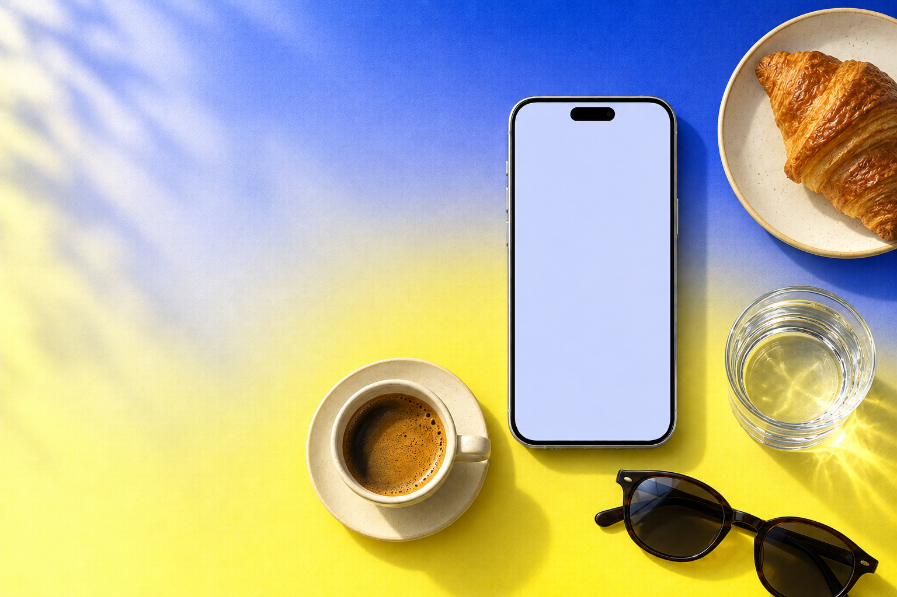
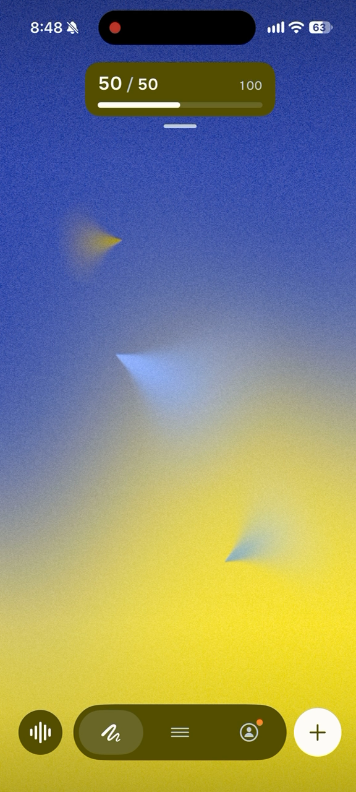
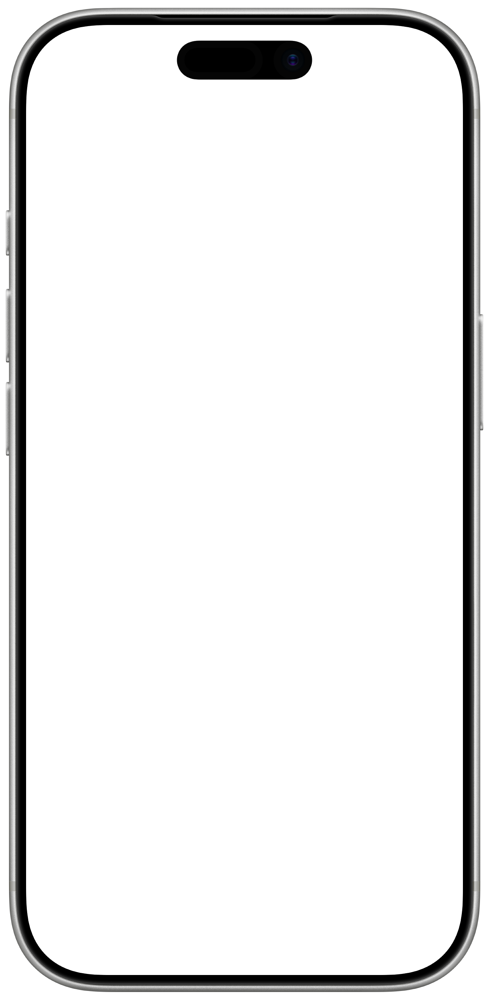
Notice more NOW.Be more HERE.
Nowhere is a free visual diary for iPhone. Choose the moments you lived. See your day take shape, and hear it in music.
You do more
than you notice.
A walk. A good laugh. A meal with someone.
Small things make a day — and a life.
What Nowhere brings together.
already do.
to your day.
you scroll.
See what filled your day.
Log the moments you lived. See your day take shape.
Choose what you did.
Tap a moment. See it take shape.
About 100 more activities in the app.
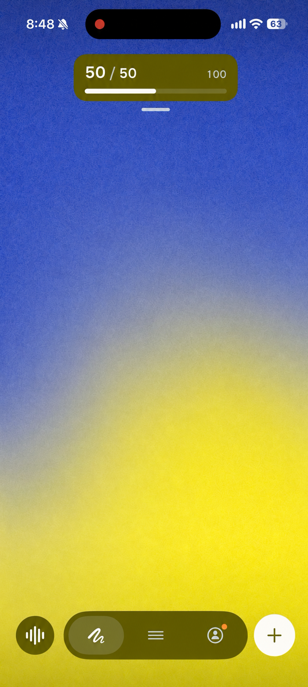
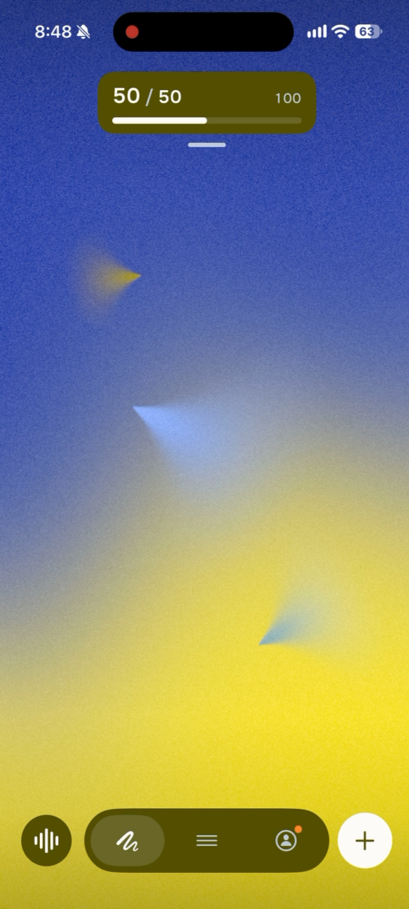
Your Canvas preview. No moments selected.Social time, on your terms.
Choose 10, 30 or 60 minutes. Your apps pause again when time is up.
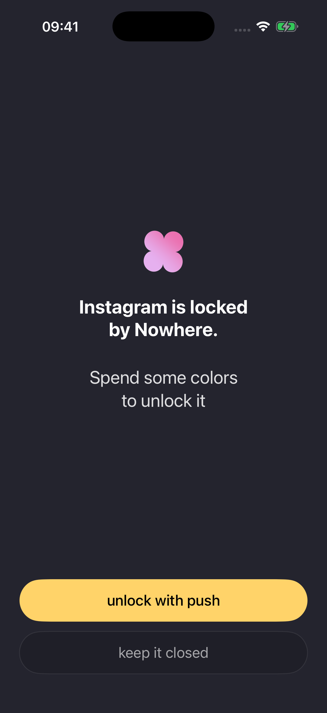
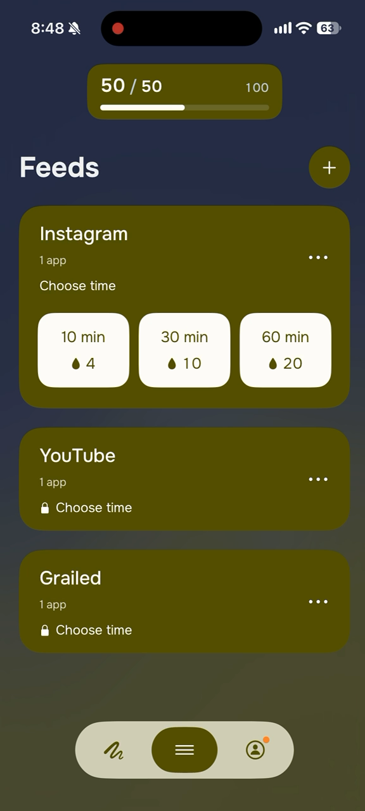
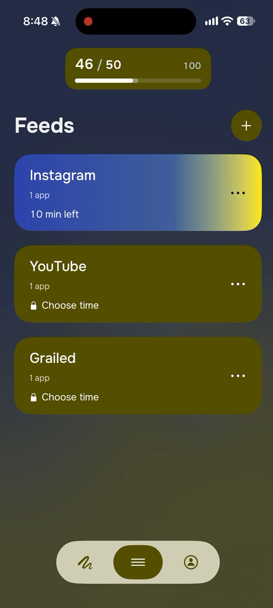
Your day becomes art.
And music.
Your Happenings, sleep, activity and time in social apps shape your Canvas and sound.
Each day gets its own picture and music.
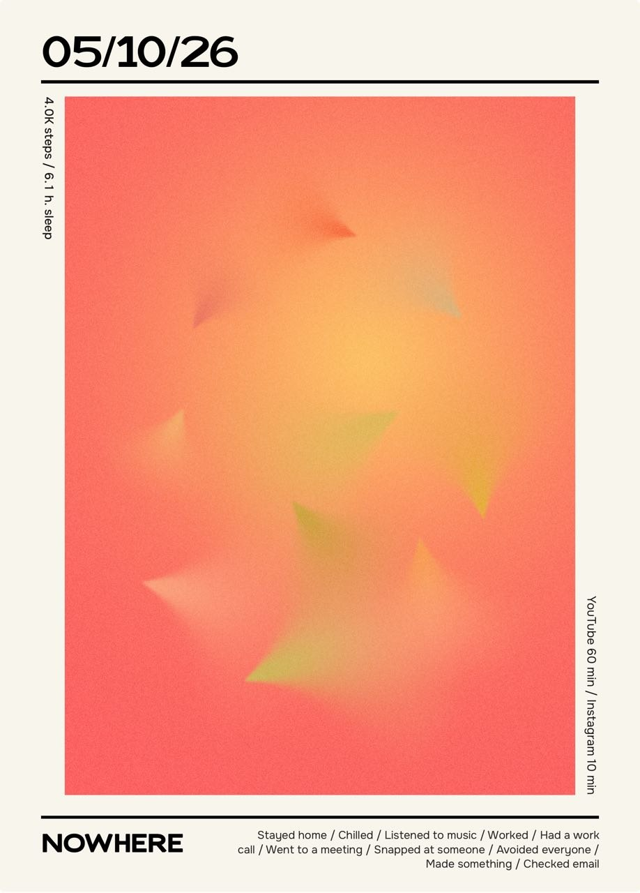
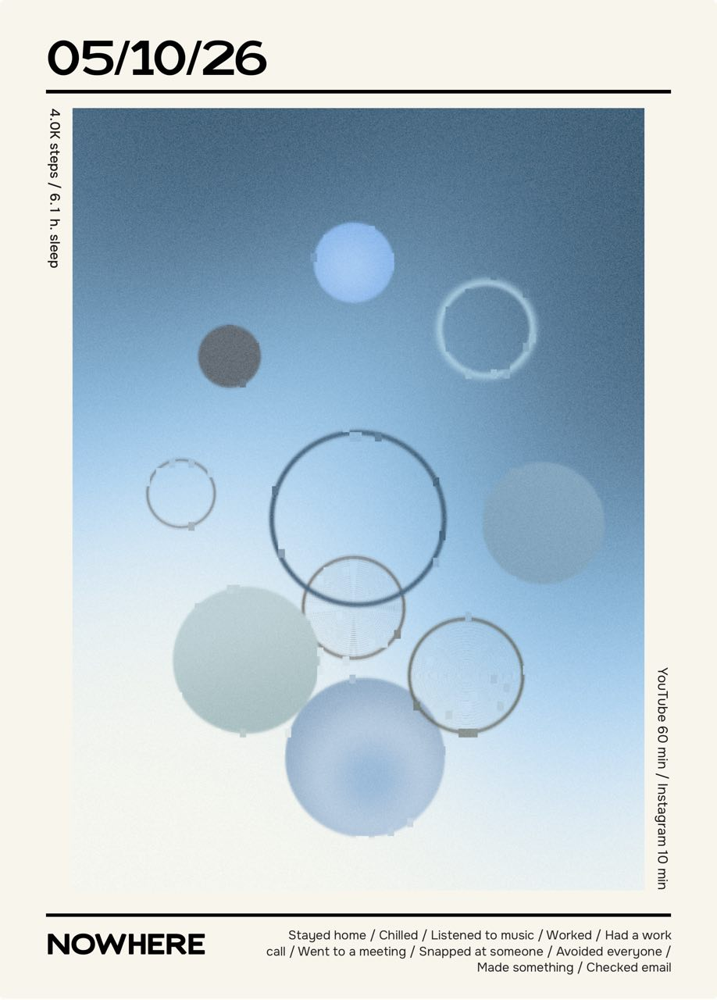
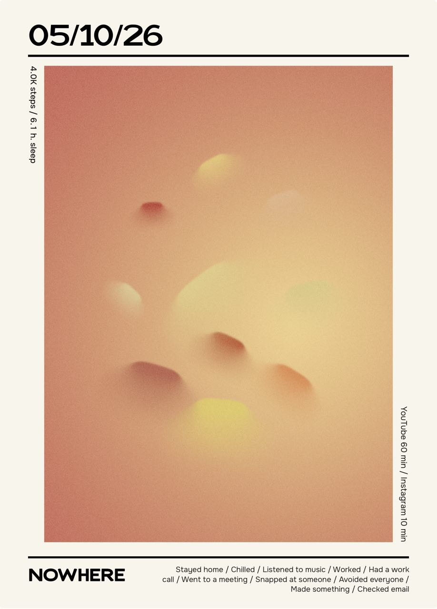
A note from Kosta.
I made Nowhere because my days were starting to feel the same. I wanted to remember what happened outside the feed.
A walk or a conversation. Something I made that day. Small things I don't want to forget.
This is a personal project. Try it and tell me what you think.
Write to me